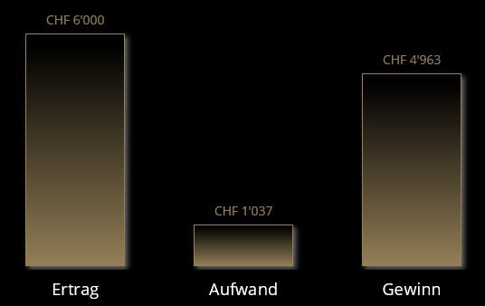

Das Jahr 2022 war ein erstes volles Vereinsjahr, welches viele Premieren mit sich brachte. Die erste ordentliche Generalversammlung am 11. März 2022 kann als Vollerfolg verbucht werden. Sämtliche Vorstandsmitglieder wurden mit Einstimmigkeit wieder gewählt und mit der Marketing- und Kulturkommission ein neues Organ mit dem Vorstandsmitglied Kevin Härri bestimmt. Das absolute Highlight war der erste offizielle Vereinsausflug am 1. Oktober 2022 organisiert durch die Reisekommission Andy Ulrich, welcher gespickt mit kulturellen, kulinarischen und kehlbefeuchtenden Happenings ein Tag voller Spass und Freude bescherte. Die Rückmeldungen waren durchwegs positiv und die Chancen stehen gut, dass Andy noch weitere Reisen organisieren wird?! ;o) Vielen herzlichen Dank für dein Engagement und die top Organisation.
Auch möchte ich im Bericht erwähnen, dass wir als Verein Interesse wecken und bereits erste neue Mitglieder aufgenommen haben. Nach erfolgreicher Absolvierung des «harten» Assessment mit der Organisation eines kulinarischen Abendessens konnten Cedric Schweingruber und Moritz Kohler bereits am ersten Vereinsausflug teilnehmen. Willkommen in unserem, besten Verein, den männlichen Frohvollen. Bezüglich den Aufnahmekriterien sind aufgrund des starken Interesses bereits Diskussionen im Gange, welche die Kriterien verschärfen sollen. Deshalb wird anlässlich der Generalversammlung ein Antrag durch mich eingereicht, die Statuten diesbezüglich anzupassen.
Das vergangene Jahr war auch das erste Jahr, in welchem Einnahmen erzielt wurden durch die Mitgliederbeiträge. Die Erfolgsrechnung zeigt, dass wir durch die Neugewinnung von Cedi und Mo das Budget übertroffen haben. Das Jahr 2023 konnte mit einem Reingewinn von CHF 4’963.00 schliessen und war somit weit über dem Budget. An dieser Stelle besten Dank an den Schatzmeister Roman Müller, welcher die Finanzen gewissenhaft nachführt und auch an den Revisor Ramon Danuser für die Prüfung der Unterlagen.
Im Jahr 2022 wurden folgende Aufwände und Erträge verbucht:
Dank straffem Haushalt und zurückhaltender Budgtesprechung konnte ein Grossteil der Erträge zurückgelget werden. Dadurch ergibt sich für das Jahr 2023 Spielraum für einen ausgiebigeren Vereinsausflug und cooles Merge!
Entsprechend der tollen Erfolgsrechnung konnte im Jahr 2022 bereits ein ordentliches Polster angelegt werden.

Gemäss der Budgetplaung 2023 wird dieses Polster weiter ausgebaut werden können.
Am Schluss, aber nicht zuletzt, ein grosser Dank an alle Mitglieder, welche nicht speziell erwähnt wurden, aber den Verein auch tatkräftig unterstützen. Ihr alle gemeinsam seid es, welchen unseren Verein ausmachen und die gemeinsamen Werte hochleben. Es ist einfach eine Freude und Ehre, Präsident eines Vereines mit all diesen guten Menschen vorzustehen.
Ich freue mich auf weitere schöne Jahre mit euch allen zusammen.
Euer Präsident - Marco Müller